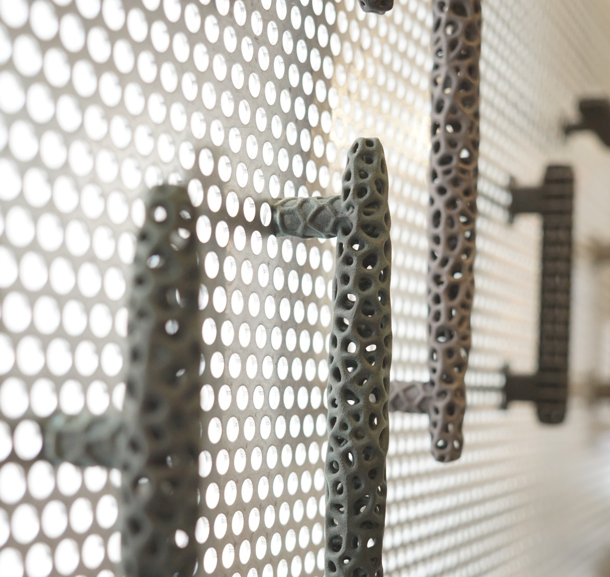
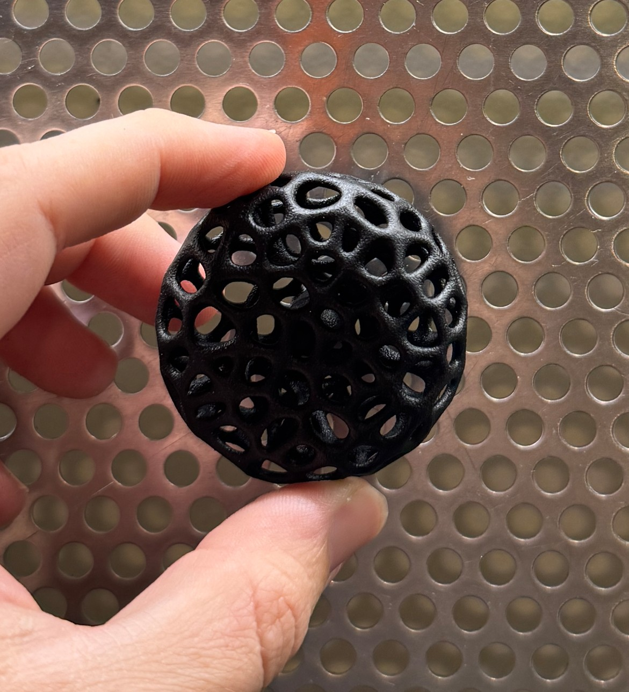
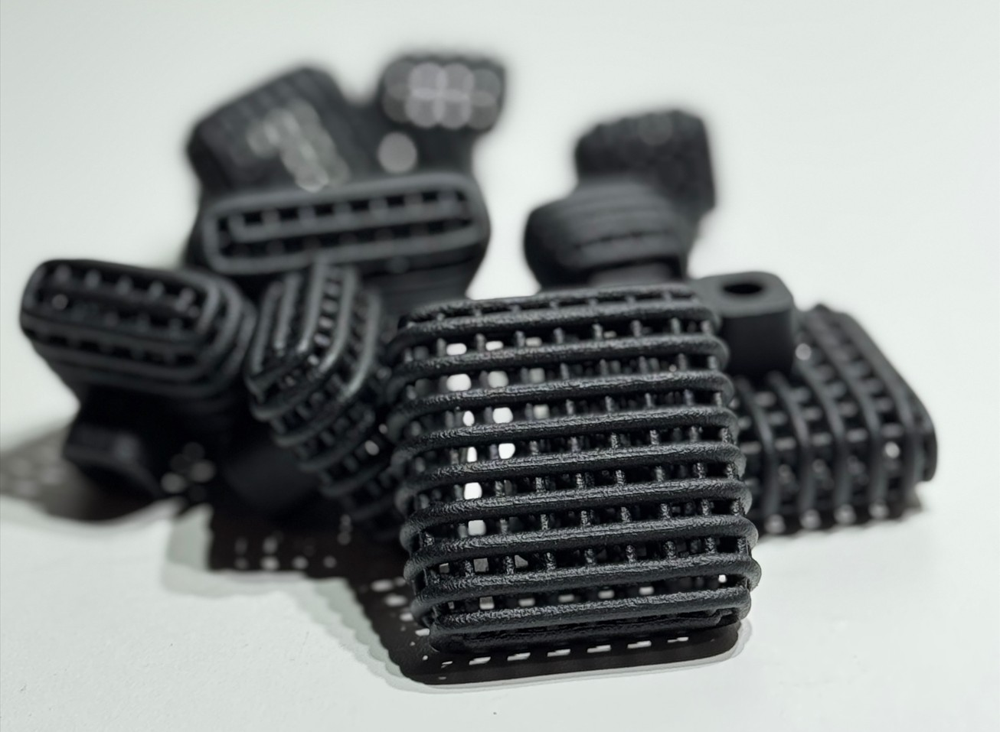
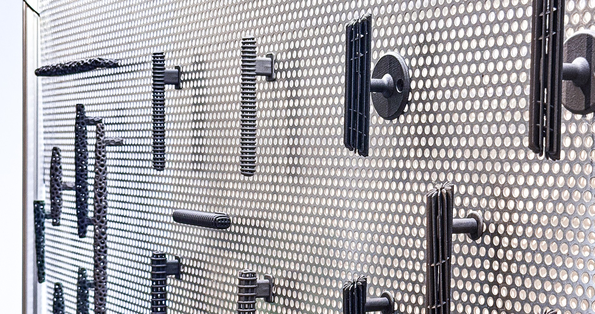

Manufactured
Memory
Ornament, manufacturing, and the architecture of touch
Contact for Sales


In an era defined by the collapse and re-imagination of industry, Manufactured Memory is a sculptural series of 3D-printed door and millwork hardware that reclaims the role of ornament in everyday, and often overlooked, components of architecture.
These objects are not merely functional — they are speculative artifacts that explore how digital fabrication can produce forms of intimacy, memory, craft and place in the age of mass customization. Drawing from Detroit's legacy as both a manufacturing powerhouse and a crucible of cultural reinvention, this series uses algorithmic design and additive manufacturing to resurrect ornament — not as nostalgia, but as a forward-looking language of identity and place.


Each piece is designed to be modifiable — parametric scripts allow for the customization of scale, form, and textures based on the user's preferences or architectural context.
Attachment points can adapt to fit existing doors or furniture. Visitors can explore how algorithmic design enables customization. Through an interactive platform, scale, form, and surface texture can be modified in real time, generating 3D print-ready digital files.
Winning Entry
We are beyond honored to have received the Jury Award in the Design category at ArtPrize 2025. Our heartfelt thanks go to everyone who makes this incredible event possible. As a token of gratitude, we have donated a humble portion of the prize back to the organizers. We sincerely hope ArtPrize continues to grow and flourish, supporting more artists who showcase some of the best work out there.
"...Each piece is both humble and refined - delicate to the eye and to the touch - yet speaks volumes through its form and materiality."